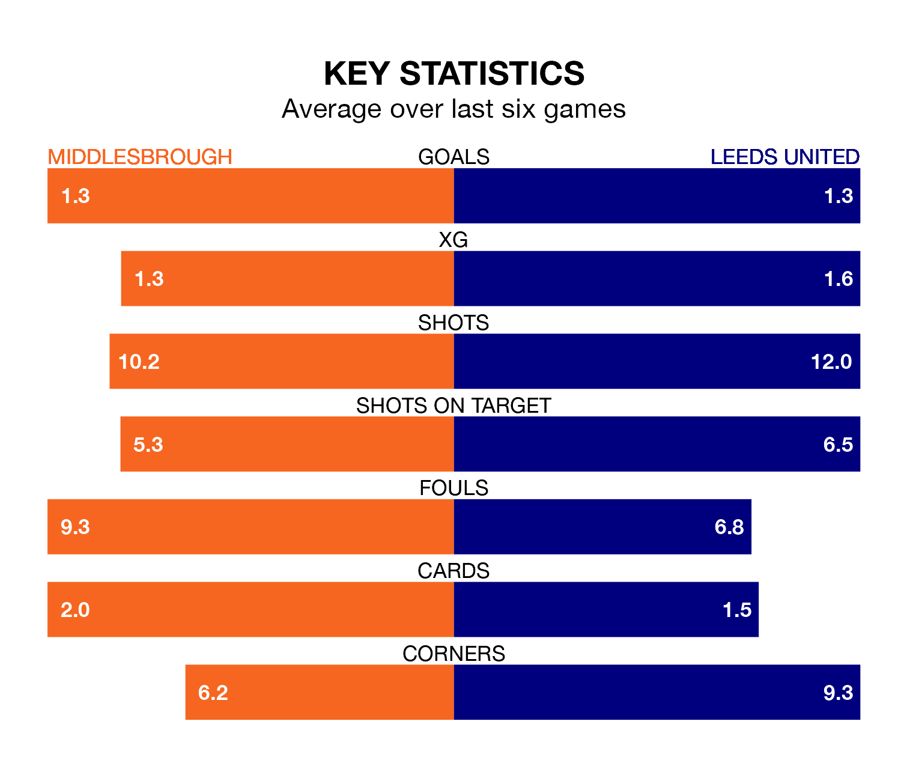

Leeds United travel to the Riverside Stadium for Monday's late match against Middlesbrough looking to bounce back from defeat last time out in EFL Championship.
Leeds, who sit third in the league after 43 games, fell to a 1-0 home defeat to Blackburn Rovers on April 13.
They face a Middlesbrough side who secured a draw in their last match, a 1-1 tie with Ipswich Town, and who sit ninth in the table.
With 76 goals in 43 games so far this season, Leeds are scoring more than average in the league with 1.8 goals per game. And they are conceding fewer than average, letting in 34 goals at a rate of 0.8 per game.
Middlesbrough are also above average scorers, with 1.4 goals per game, compared to a league average of 1.3. They have conceded 1.3 goals per game.
With Illan Meslier between the sticks, United can rely on one of the league's safest pair of hands. He has kept 18 clean sheets in his 41 appearances this season, and no 'keeper has prevented the opposition scoring more often in EFL Championship.
In the Boro's net, Timothy Dieng has 10 clean sheets in 32 games. He has conceded a goal every 76 minutes, 70% more often than the 126 minutes between goals for Meslier.
In the last 10 years, Middlesbrough and Leeds have played each other on 11 occasions. Middlesbrough won two of them, Leeds six, and they drew three times.
On average, the Boro scored 0.9 goals and Leeds 1.2 in those matches.
Their last meeting was on December 2, when Leeds won 3-2 at home.
The hosts are in mixed form in EFL Championship, with two wins and four draws from their last six games.
With two wins and two draws over that period, the away team's form is slightly worse – they have taken eight points from 18, compared to Middlesbrough's 10.
Updated: 11:31 (UTC), 15/04/24